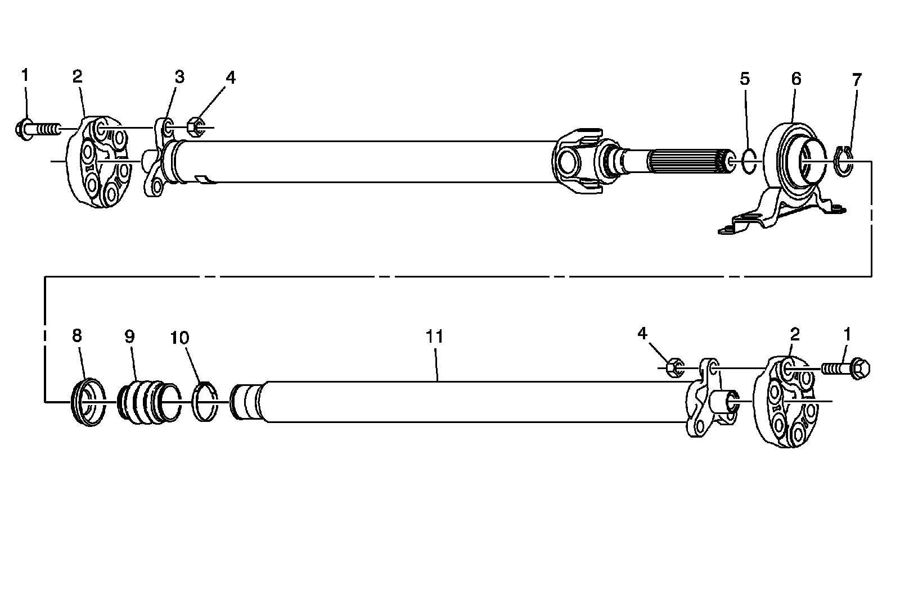
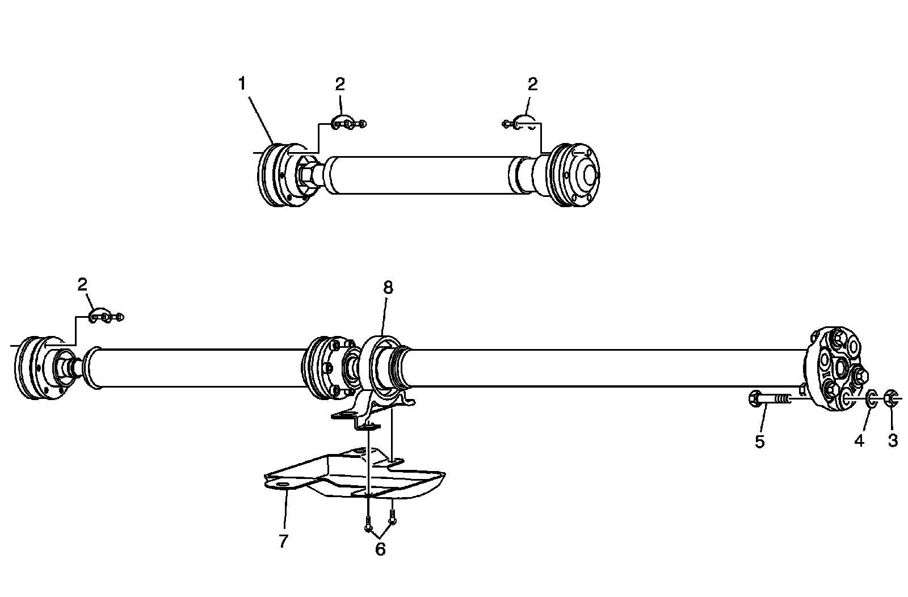

Drive/Propeller Shaft
Driveline Disassembled Views
Front and Rear Propeller Shaft (RWD)
Front and Rear Propeller Shaft (RWD):

1 - Mounting Flange Bolt
1 - Mounting Flange Bolt
2 - Mounting Flange
2 - Mounting Flange
3 - Propeller Shaft Rear Half
4 - Mounting Flange Nut
4 - Mounting Flange Nut
5 - Propeller Shaft O-ring Seal
6 - Center Support Bearing
7 - Center Support Propeller Shaft Retaining Ring
8 - Center Support Bearing Slinger
9 - Dust Boot
10 - Dust Boot Clamp
11 - Propeller Shaft Front Half
Front and Rear Propeller Shaft (AWD)
Front and Rear Propeller Shaft (AWD):

1 - Front Propeller Shaft
2 - Mounting Flange Bolt
2 - Mounting Flange Bolt
2 - Mounting Flange Bolt
3 - Nut
4 - Washer
5 - Bolt
6 - Heat Shield Bolts
7 - Heat Shield
8 - Center Bearing